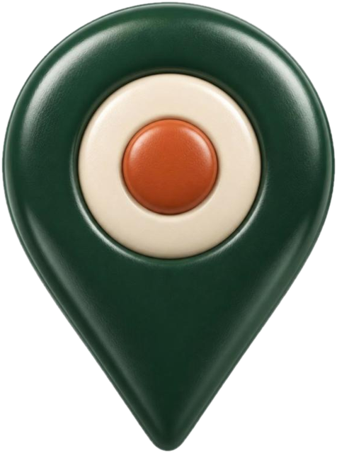
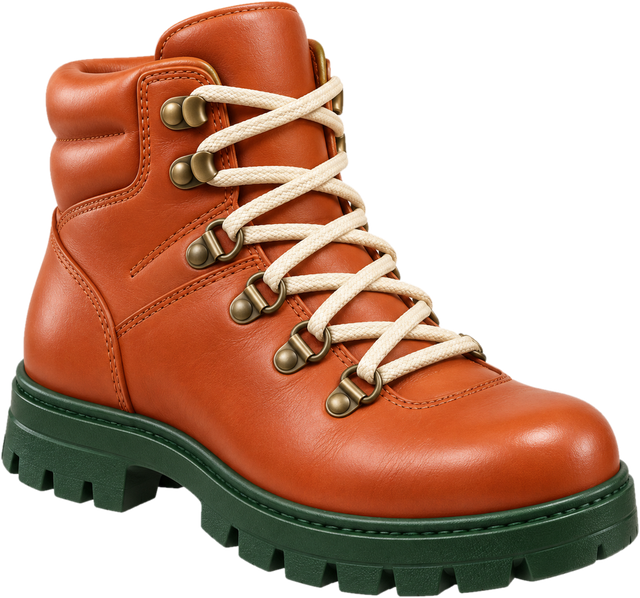

65
min
דק׳
4.1 km · Golden-hour walk to Jaffa Port
4.1 ק״מ · הליכת שקיעה לנמל יפו

18:15
Habima Sunken Garden
גן יעקב והבימה
Start
התחלה
18:32
Carmel Market Alleys
סמטאות שוק הכרמל
Tastings
טעימות
18:55
Neve Tzedek Courtyards
חצרות נווה צדק
Shade
צל
19:20
Old Jaffa Sea Overlook
תצפית הים ביפו העתיקה
Sunset
שקיעה
Florentin Roasters & Murals
בתי קלייה וציורי קיר בפלורנטין
50 min · 3.2 km · Walked Tue
50 דק׳ · 3.2 ק״מ · הושלם בשלישי
Ein Kerem Spring Trail
שביל המעיין בעין כרם
75 min · 4.6 km · Saved
75 דק׳ · 4.6 ק״מ · שמור
Old Jaffa Overlook
תצפית יפו העתיקה
19:20
4 stops · 4.1 km
4 תחנות · 4.1 ק״מ
© OpenStreetMap · Traike
Where shall we walk?
לאן נצא ללכת היום?


Chat with Traike
שיחה עם טרייק
Pick a vibe or name your stops — I'll thread a calm route.
בחרו אווירה או כתבו תחנות — אחבר לכם מסלול מדויק.
Route vibe
אווירת המסלול
Time available
זמן פנוי להליכה
More options (pace, loop, custom start) אפשרויות נוספות (קצב, מסלול מעגלי, התחלה)
Carmel Market
שוק הכרמל
18:36
4 stops · 4.1 km
4 תחנות · 4.1 ק״מ
© OpenStreetMap · Traike
4
min · 310 m
דק׳ · 310 מ׳
Left on Nahalat Binyamin to Carmel Market
שמאלה לנחלת בנימין אל שוק הכרמל

18:15
Habima Sunken Garden
גן יעקב והבימה
Passed
עברנו
18:36
Carmel Market Alleys
סמטאות שוק הכרמל
Next · 4m
הבא · 4 דק׳
18:58
Neve Tzedek Courtyards
חצרות נווה צדק
22 min
22 דק׳
19:20
Old Jaffa Sea Overlook
תצפית הים ביפו העתיקה
Finish
סיום
Carmel Market
שוק הכרמל
18:36
GPS locked · 2.8 km left
מיקום נעול · נותרו 2.8 ק״מ
© OpenStreetMap · Traike
My walks & friends
המסלולים שלי וחברים

Jaffa Ridge & Flea Market
רכס יפו ושוק הפשפשים
65 min · 4.1 km · 4 stops
65 דק׳ · 4.1 ק״מ · 4 תחנות
Jerusalem Nachlaot Courtyards
בוסתנים וחצרות בנחלאות
80 min · 4.9 km · 5 stops
80 דק׳ · 4.9 ק״מ · 5 תחנות
Haifa Louis Promenade Loop
טיילת לואי ומצפה הבהאים
45 min · 2.9 km · Viewpoints
45 דק׳ · 2.9 ק״מ · תצפיות
Share a route link with friends to walk each other's favourite stops.
שתפו קישור למסלול עם חברים כדי לטייל בתחנות האהובות עליהם.
Yael Mizrahi
יעל מזרחי
yael@traike.app · 12 walks
yael@traike.app · 12 הליכות
Language
שפת ממשק
Appearance
מצב תצוגה
Default pace
קצב הליכה קבוע
Distance units
יחידות מרחק
Sign in to Traike
התחברות לטרייק
Walks built around you
מסלולים שנבנים סביבך
Save routes, sync live walks, and share stops.
שמרו מסלולים, סנכרנו הליכות ושתפו תחנות.